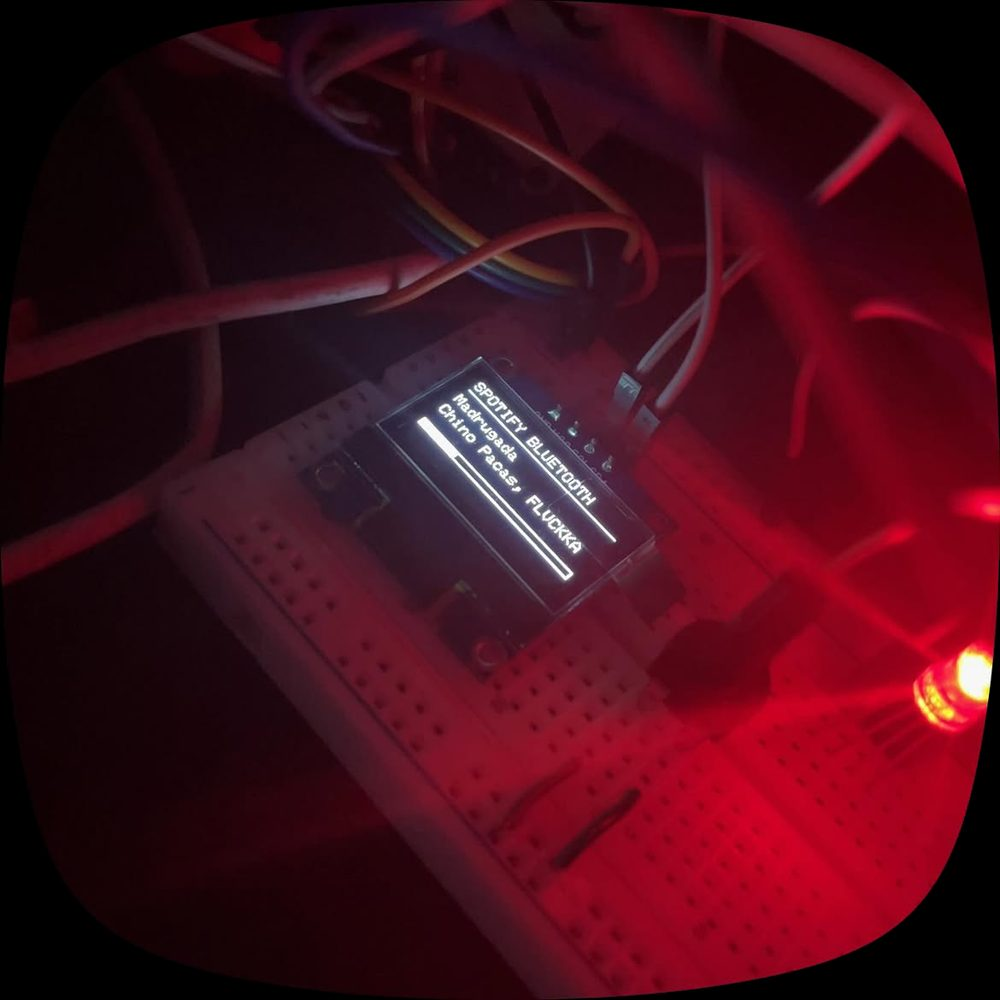

Bocina Inteligente
Una bocina con ESP32 que recibe audio del celular por Bluetooth, lo entrega por I²S, muestra título, artista y progreso en OLED y se controla con botones y perilla.
- Estado
- Funcional
- Periodo
- jun 2026
- Versión
- V5
- Categorías
- ESP32 · Audio
Objetivo y contexto
Reproducir música del celular con una interfaz propia y entender la ruta completa del audio en el ESP32.
Problema. Construir una bocina Bluetooth propia con controles físicos y pantalla, en lugar de un módulo cerrado.
Arquitectura del sistema
El ESP32 funciona como receptor A2DP. Un callback AVRCP recibe los metadatos de la canción; el lazo principal lee botones y perilla, actualiza la OLED y el LED, y envía comandos de reproducción al celular.
Diagrama de bloques
Pines y buses tomados del código fuente.
Hardware y componentes
| Componente | Función | Conexión | Evidencia |
|---|---|---|---|
| ESP32 DevKit | Receptor Bluetooth | — | Verificado en código |
| Módulo de salida I²S | Salida de audio | LRC 25 · BCLK 32 · DOUT 33 | Verificado en código |
| OLED SSD1306 128×64 | Metadatos | I²C | Verificado en código |
| Potenciómetro | Volumen | GPIO34 | Verificado en código |
| 3 botones | Control de reproducción | GPIO 18/19/23 | Verificado en código |
| LED RGB | Estado | GPIO 14/12/13 | Verificado en código |
Firmware, software y protocolos
- Audio
- Librería ESP32-A2DP como sink con pines I²S propios Verificado en código
- Metadatos
- Callback AVRCP con título, artista y duración Verificado en código
- Interfaz
- Marquesina de 3 px cada 350 ms para títulos de más de 14 caracteres; barra de progreso autónoma Verificado en código
- Controles
- Antirrebote de 350 ms; volumen ADC 0–4095 → 0–128 aplicado solo cuando cambia Verificado en código
Funcionamiento
- Se anuncia como dispositivo Bluetooth "Bocina Inteligente".
- Al cambiar de canción reinicia la barra de progreso con la duración recibida.
- Los botones envían play/pausa, siguiente y anterior al celular.
Decisiones técnicas
- Cambio de arquitectura en V3
- V1 consultaba Spotify y V2 reproducía radio por internet; V3 pasa a Bluetooth A2DP.
- Barra de progreso local
- Avanza cada segundo con millis() sin depender de mensajes del celular.
Fotografías y diagramas reales

Pruebas y resultados
- Reproducción por Bluetooth con título y artista en la pantalla OLED, en foto. Foto / video
- Funcionamiento completo del prototipo confirmado por el autor. Declarado por el autor
Problemas encontrados y soluciones
| Problema | Solución | Fuente |
|---|---|---|
| Salida de audio sin DAC externo (V2) | Se configuró la salida analógica directa en el pin 25 con el DAC interno. | Verificado en código |
Limitaciones y mejoras futuras
Limitaciones
- Sin control de volumen por AVRCP desde el celular documentado.
Mejoras futuras
- Documentar la cadena de audio y medir calidad o latencia.
- Carcasa y alimentación por batería.
Evolución por versiones
- V1
Wi-Fi + Spotify: muestra la canción en OLED.
- V2
Radio por internet con ESP32-audioI2S y DAC interno.
- V3
Bluetooth A2DP Sink con salida I²S.
- V4–V5
Botones, perilla, LED arcoíris, marquesina y barra autónoma.
Código y documentación
github.com/nshtpdrz/bocina-inteligente-esp32
Incluye todas las versiones del firmware, diagrama de bloques e instrucciones para compilar. Las credenciales se leen de un archivo secrets.h que no se publica.